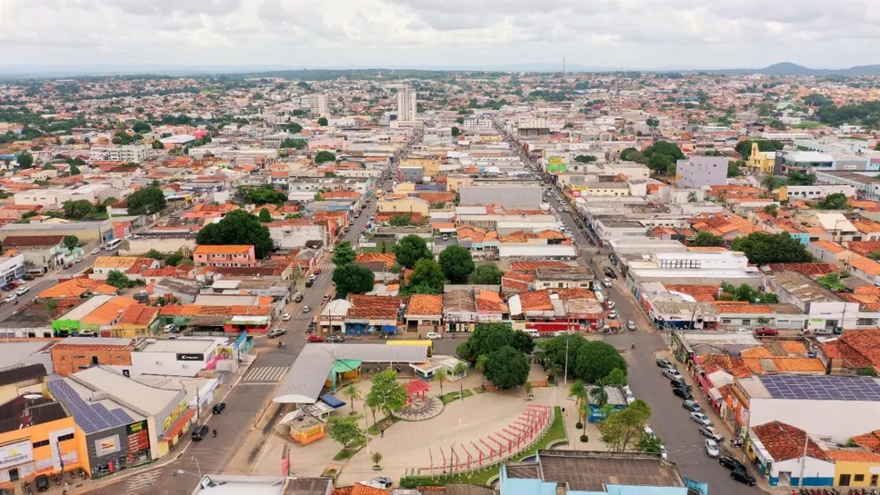

Tocantins é um estado localizado na Região Norte do Brasil, fundado em 1989, sendo o mais recente do país. Sua capital, Palmas, foi planejada e inaugurada com o objetivo de promover o desenvolvimento da região central do Brasil. O estado é caracterizado por uma diversidade de paisagens, que vão desde cerrados e planaltos até áreas de floresta tropical. Tocantins tem uma economia baseada na agropecuária, especialmente na produção de soja, milho e carne bovina, além de contar com o extrativismo mineral e a geração de energia hidrelétrica. O turismo também ganha destaque, principalmente pela beleza natural de seus parques, como o Parque Nacional do Jalapão, famoso por suas dunas, cachoeiras e formações rochosas. Tocantins é um estado de forte identidade regional, com uma cultura que mistura influências indígenas, nordestinas e do Centro-Oeste.
